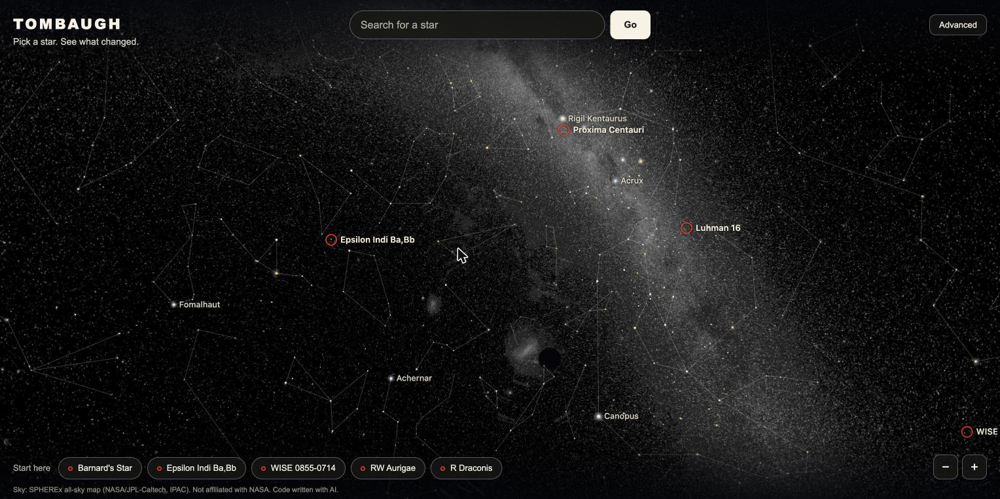
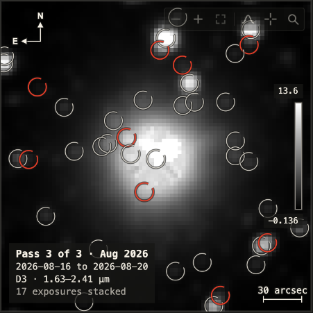
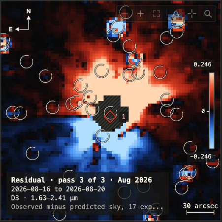
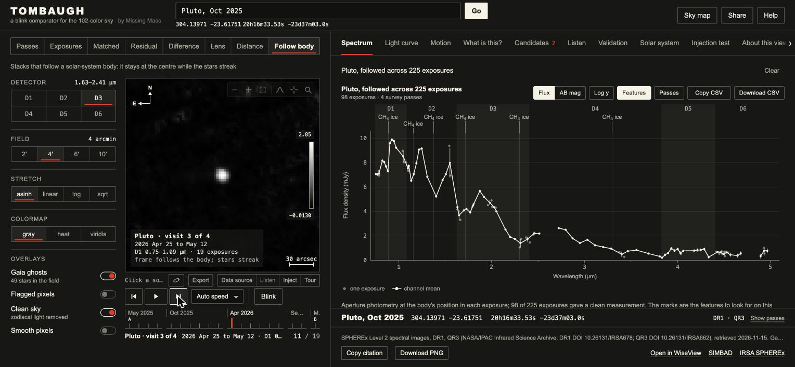
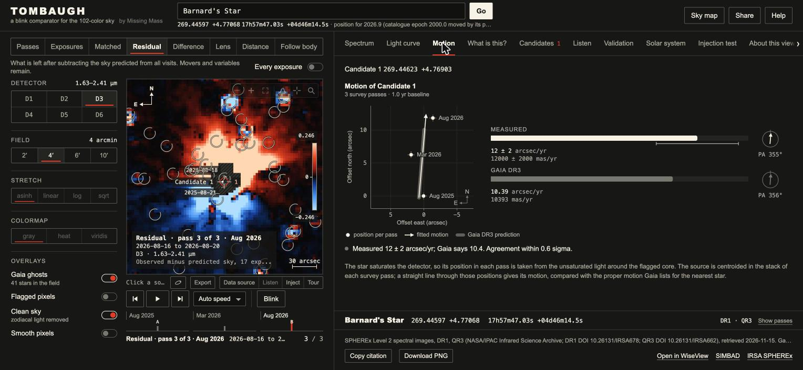

A blink comparator for the 102-color sky.
Give it any spot on the sky. It plays every SPHEREx image of that spot as a movie, subtracts the sky it predicts, and measures what moved or changed.
batch-ly.com/tombaugh github.com/IshiakiZ/Batchly-Public





| Target | Tombaugh measures | Catalogue | Sigma |
|---|---|---|---|
| Barnard's Star | 11903 ± 2426 mas/yr at 355 ± 12° | 10380 at 356° | +0.6 |
| Epsilon Indi Ba,Bb | 4511 ± 648 mas/yr at 125.9 ± 8.2° methane band depth 0.600 ± 0.002 | 4635 at 123.9° | −0.2 |
| WISE 0855-0714 | 8016 ± 1249 mas/yr at 277.9 ± 8.9° | 8169 at 274.6° | −0.1 |
| RW Aurigae | ×1.397 ± 0.041 brighter, Sep 2025 → Mar 2026 no motion detected | irregular variable | 11.0 |
| R Draconis | ×0.717 ± 0.056 fainter, Mar → Apr 2026 no motion detected | Mira variable | 4.3 |